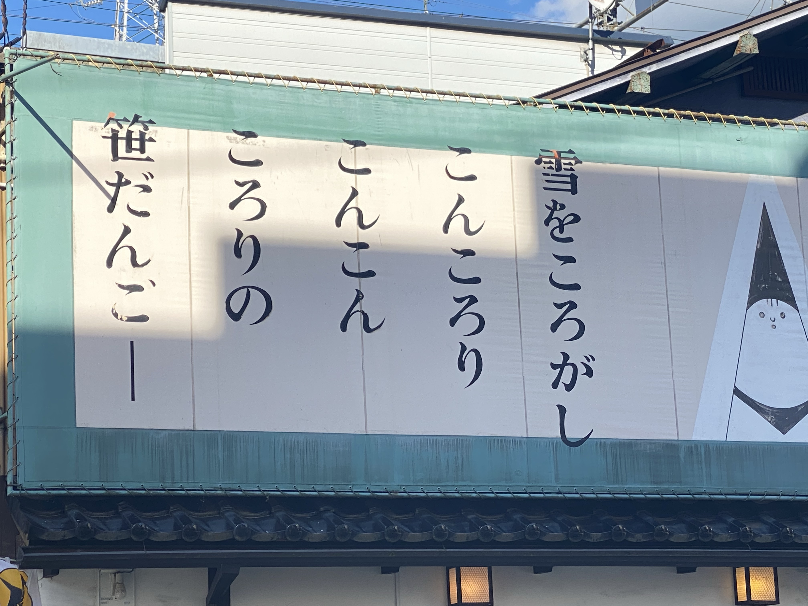
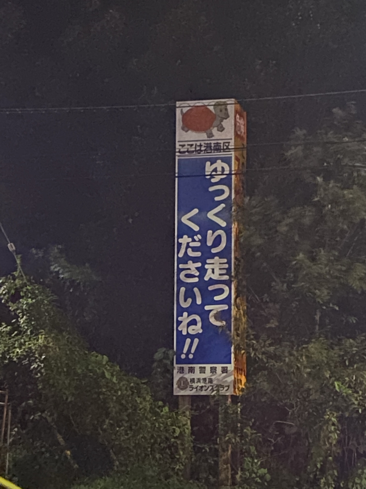
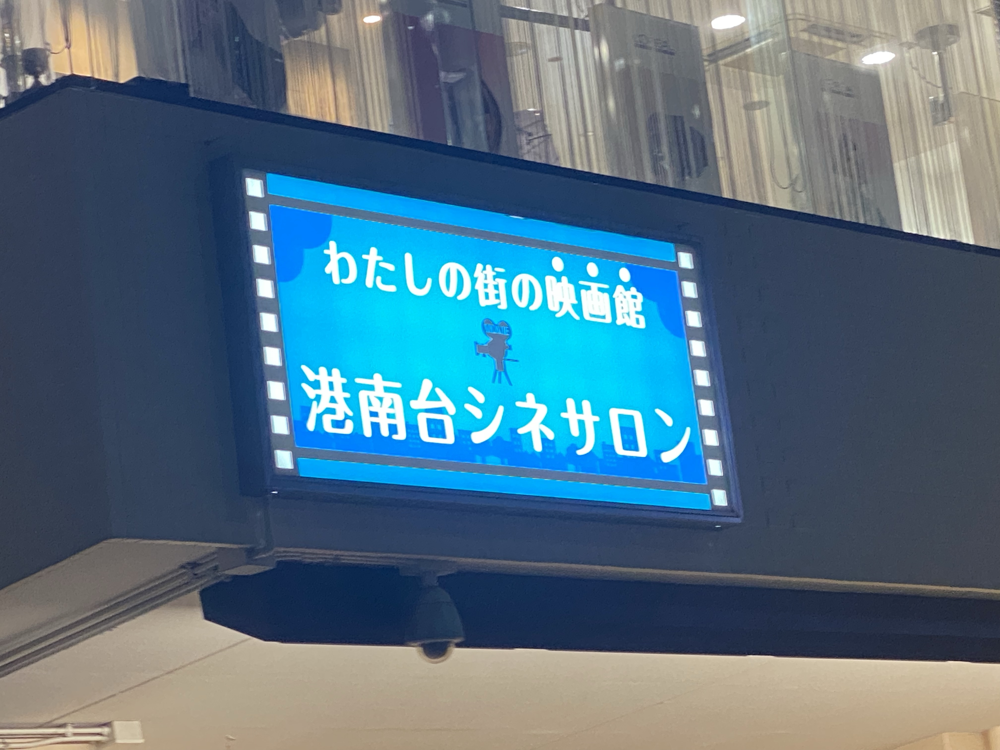

新潟の笹団子

これは新潟に行った時にとても頭に残るようなフレーズだったので撮影しました。
この課題を聞いた時にこの写真を思い出して絶対入れようと思い、一つ目に持ってきました。
8月7日撮影
亀と鰐

この看板は自分の住んでいる町で一番印象的な看板だったので撮影しました。
見るたびに亀っぽいワニなのか、ワニっぽい亀なのか気になります。
10月11日の学校帰りに撮影しました。
シネマじゃない映画館

普通は映画館といえばシネマが普通ですが、この看板にかいてある劇場はまが足りないので
逆に映画館っぽい何かかなと思っちゃいますね。そう思う人がたくさんいるのか、この看板の"映画館"の文字もしっかり強調されています。
10月11日撮影